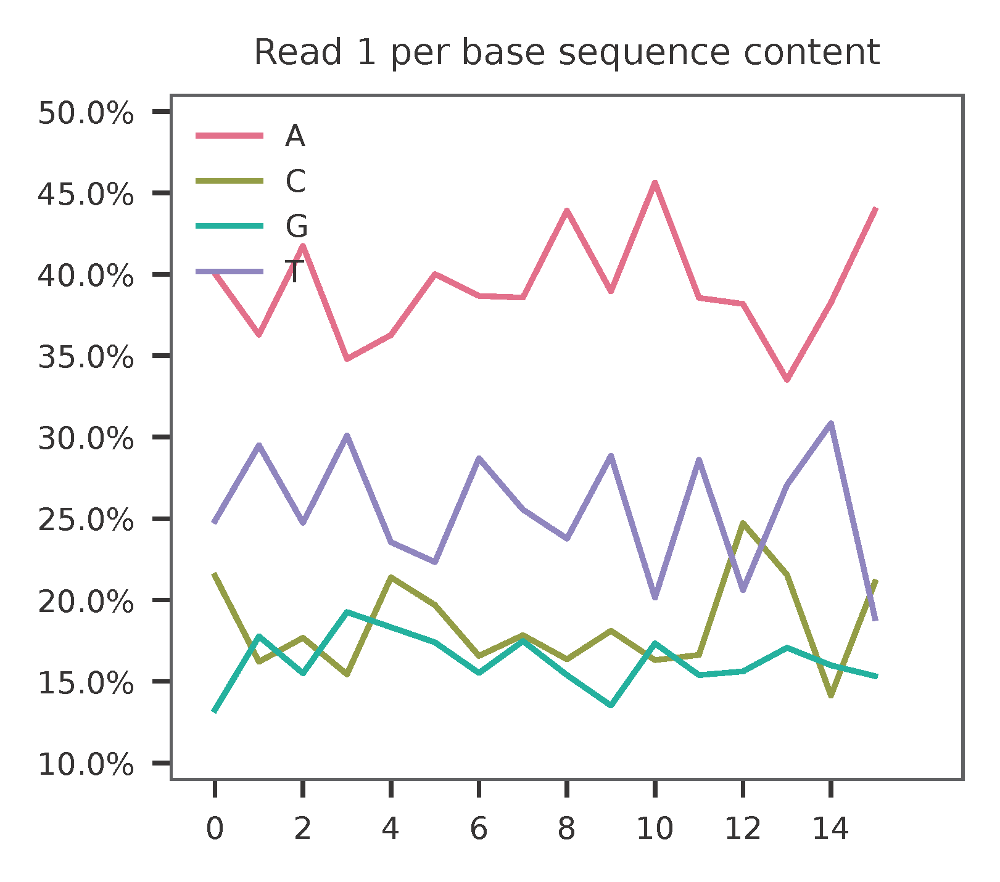
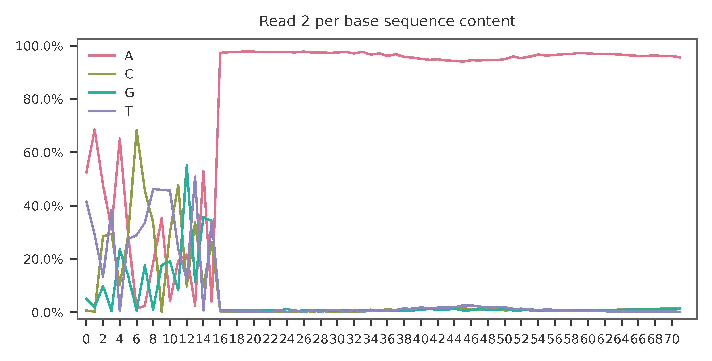
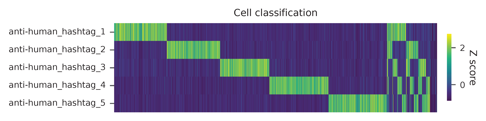
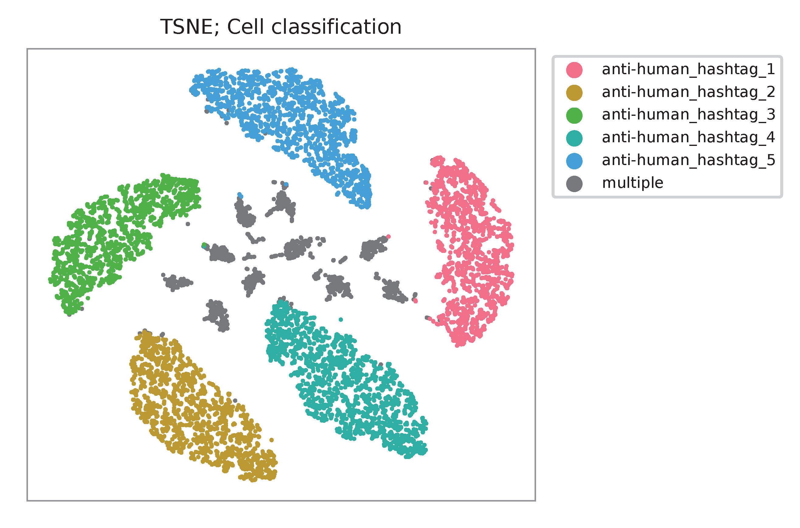
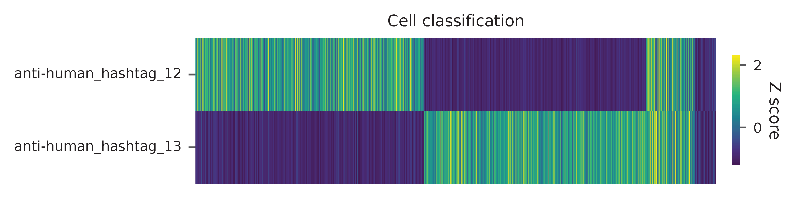
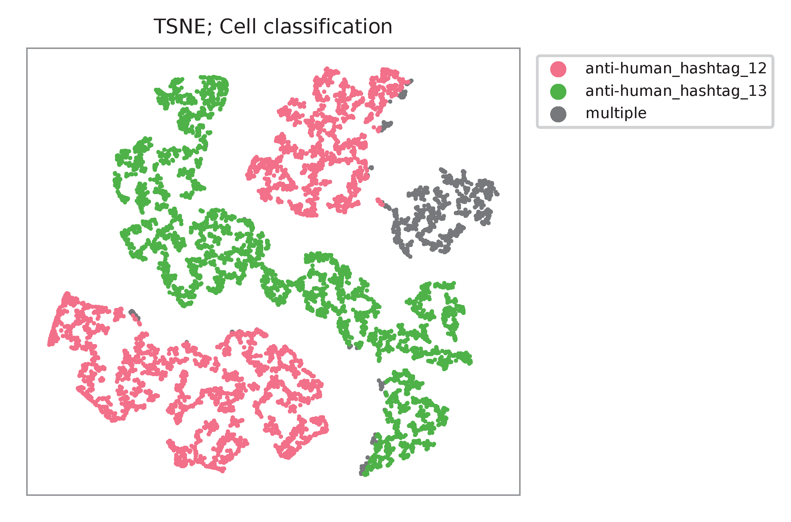
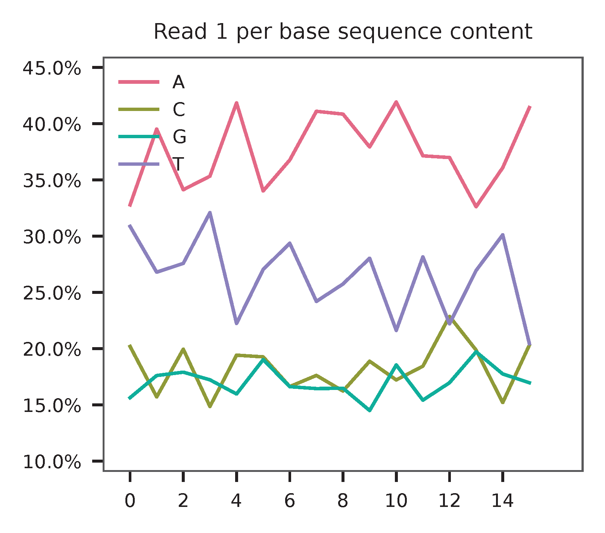
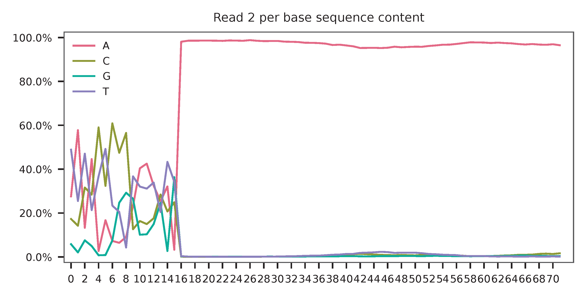

ASAP-seq; Multiplexed CRISPR Perturbations in Primary T Cells¶
Dataset: ASAP-seq: Multiplexed CRISPR Perturbations in Primary T Cells
Mimitou, E.P., Lareau, C.A., Chen, K.Y., Zorzetto-Fernandes, A.L., Hao, Y., Takeshima, Y., Luo, W., Huang, T.-S., Yeung, B.Z., Papalexi, E., et al. (2021). Scalable, multimodal profiling of chromatin accessibility, gene expression and protein levels in single cells. Nat. Biotechnol. 39, 1246–1258.
Preparation¶
Download fastq files from Gene Expression Omnibus.
$ ls -l
SRR12476627_1.fastq.gz
SRR12476627_2.fastq.gz
SRR12476627_3.fastq.gz
SRR12476628_1.fastq.gz
SRR12476628_2.fastq.gz
SRR12476628_3.fastq.gz
SRR12476630_1.fastq.gz
SRR12476630_2.fastq.gz
SRR12476630_3.fastq.gz
SRR12476631_1.fastq.gz
SRR12476631_2.fastq.gz
SRR12476631_3.fastq.gz
Hashtag oligos
$ cat SRR12476630_2.fastq.gz SRR12476631_2.fastq.gz > hto_read_2.fq.gz
$ cat SRR12476630_3.fastq.gz SRR12476631_3.fastq.gz > hto_read_3.fq.gz
Antibody-derived tags
$ cat SRR12476627_2.fastq.gz SRR12476628_2.fastq.gz > adt_read_2.fq.gz
$ cat SRR12476627_3.fastq.gz SRR12476628_3.fastq.gz > adt_read_3.fq.gz
Download cell barcode info from the manuscript’s wonderful GitHub. We need to get the cell-associated barcodes of this single-cell ATAC-Seq library.
$ wget https://github.com/caleblareau/asap_reproducibility/blob/master/CD4_CRISPR_asapseq/data/filtered_peak_bc_matrix.h5
$ ls -l
filtered_peak_bc_matrix.h5
Retrieve cell-associated barcodes from this downloaded h5 file generated by 10x Genomics’ Cell Ranger ATAC.
R version 4.1.3 (2022-03-10) -- "One Push-Up"
Platform: aarch64-apple-darwin21.3.0 (64-bit)
r$> h5f <- rhdf5::H5Fopen(name = "filtered_peak_bc_matrix.h5")
r$> cell_barcodes <- h5f$matrix$barcodes
r$> rhdf5::H5Fclose(h5f)
r$> write.table(
x = cell_barcodes,
file = "cell_barcodes.txt",
col.names = FALSE,
row.names = FALSE,
quote = FALSE
)
Inspect cell barcodes.
$ head cell_barcodes.txt
AAACGAAAGCTCGTTA-1
AAACGAAAGCTGAGGT-1
AAACGAAAGGTGAACC-1
AAACGAACAACATAAG-1
AAACGAACAATAGCGG-1
AAACGAACAATCCATG-1
AAACGAACACGTTAGT-1
AAACGAACAGAGATGC-1
AAACGAACAGCGTAGA-1
AAACGAAGTAAACGAT-1
Prepare feature barcodes (hashtag oligos, HTOs) from sheet ‘Supplementary_1_Perturbation’ in the supplementary table file.
$ cat feature_barcodes_HTO.tsv
anti-human_hashtag_1 GTCAACTCTTTAGCG
anti-human_hashtag_2 TGATGGCCTATTGGG
anti-human_hashtag_3 TTCCGCCTCTCTTTG
anti-human_hashtag_4 AGTAAGTTCAGCGTA
anti-human_hashtag_5 AAGTATCGTTTCGCA
anti-human_hashtag_12 TAACGACCAGCCATA
anti-human_hashtag_13 AAATCTCTCAGGCTC
Prepare feature barcodes (antibody-derived tags, ADTs) from sheet ‘Supplementary_1_Hashing’ in the supplementary table file.
$ cat feature_barcodes_ADT.tsv
UCHT1 CTCATTGTAACTCCT
RPA-T4 TGTTCCCGCTCAACT
SK1 GCGCAACTTGATGAT
HI100 TCAATCCTTCCGCTT
UCHL1 CTCCGAATCATGTTG
EH12.2H7 ACAGCGCCGTATTTA
A019D5 GTGTGTTGTCCTATG
DX2 CCAGCTCATTAGAGC
G043H7 AGTTCAGTCAACCGA
WM59 ACCTTTATGCCACGG
BC96 TTTGTCCTGTACGCC
QA17A04 AACTCCCTATGGAGG
FN50 GTCTCTTGGCTTAAA
O323 GCACTCCTGCATGTA
C398.4A CGCGCACCCATTAAA
BJ18 AATCCTTCCGAATGT
A15153G TTGCTTACCGCCAGA
CD7-6B7 TGGATTCCCGGACTT
Ber-ACT35_(ACT35) AACCCACCGTTGTTA
DREG-56 GTCCCTGCAACTTGA
A1 TTACCTGGTATCCGT
4B4-1 CAGTAAGTTCGGGAC
108-17 ACCTTTCGACACTCG
CD28.2 TGAGAACGACCCTAA
HIT2 TGTACCCGCTTGTGA
AD2 CAGTTCCTCAGTTCG
HP-3G10 GTACGCAGTCCTTCT
HIB19 CTGGGCAATTACTCG
2D1 TCCCTTGCGATTTAC
M5E2 TCTCAGACCTCCGTA
5.1H11 TCCTTTCCTGATAGG
3G8 AAGTTCACTCTTTGC
IP26 CGTAACGTAGAGCGA
F38-2E2 TGTCCTACCCAACTT
J252D4 AATTCAACCGTCGCC
S-HCL-3 TACGCCTATAACTTG
MOPC-21 GCCGGACGACATTAA
Cell hashing¶
QC¶
Sample the first 10,000 (set by -n) read pairs for quality control. Use -t to set the number of threads. The diagnostic results and plots are generated in the qc directory (set by --output_directory, default qc). By default, full length of read 1 and read 2 are searched against reference cell and feature barcodes, respectively. The per base content of both read pairs and the distribution of matched barcode positions are summarized. Use -r1_c and/or -r2_c to limit the search range. Use -cb_n and/or -fb_n to set the mismatch tolerance for cell and feature barcode matching (default 3).
This library is built using 10x Genomics’ Chromium Single Cell ATAC Reagent Kits. The 10x Barcode (16 bp) is sequenced in the i5 index read. 10x Genomics’ Cell Ranger ATAC may convert the raw 16 bp sequences to their reverse-complement counterparts as cell barcodes in the outputs. In fba, use -cb_rc to reverse-complement cell barcode sequences for processing.
$ fba qc \
-1 hto_read_2.fq.gz \
-2 hto_read_3.fq.gz \
-w cell_barcodes.txt \
-f feature_barcodes_HTO.tsv \
--output_directory qc \
-cb_rc
This library is built using the Chromium Single Cell ATAC Reagent Kits and sequenced on Illumina NextSeq 550. The GC content of cell barcodes (read 2) are A-rich.
{kind=link}
As for read 3, based on the per base content, it suggests that bases 0-14 are actually our feature barcodes (See the distribution of matched barcode positions on read 3).
{kind=link}

The detailed qc results are stored in feature_barcoding_output.tsv.gz file. matching_pos columns indicate the matched positions on reads. matching_description columns indicate mismatches in substitutions:insertions:deletions format.
$ gzip -dc feature_barcoding_output.tsv.gz | grep -v no | head
read1_seq cell_barcode cb_matching_pos cb_matching_description read2_seq feature_barcode fb_matching_pos fb_matching_description
TTTAAGCTGCCTAACA TTGTTAGCTGCCCAAC 0:15 2:0:1 TAACGACCAGCCATNNNANAANNANNANNNANNNNANNNNNANNNNNNNANNNNNNNNNNNNNNNNNANNNN anti-human_hashtag_12_TAACGACCAGCCATA 0:15 1:0:0
AGAACGCGAAAAGGTT AGAACGCGAGTACGTT 0:16 3:0:0 TGATGACCTATTGGNNNAAAANNANNANNNANNNNANANNNANNNANNNANNNNNNANNNNNNNNNNANNAN anti-human_hashtag_2_TGATGGCCTATTGGG 0:15 2:0:0
TGAGACTTGGCAGGAT TGAGACTTGGCAGGAT 0:16 0:0:0 TTTCGCCTTTCTTTGNAAAAANNANNAANAANNANANANAAANNAAANNAANANNAAAAANNANNNNAANAN anti-human_hashtag_3_TTCCGCCTCTCTTTG 0:15 2:0:0
ATTTATTGACGCAAAG CTTATTGTGCGCAAAG 1:16 2:0:1 TTCCACCTCTCTTTGNAAAAAANAANAAAAANAANAAANAAANAAAANAAAAANNAAAAAANAANNNAAAAN anti-human_hashtag_3_TTCCGCCTCTCTTTG 0:15 1:0:0
CGCCCTTCTGGGTAGT CGCCCTTCTGGGTAGT 0:16 0:0:0 AAGTATCGTTTCGCATAAAAAAAAANAAAAANAANAAANAAAAAAAAAAAAAAAAAAAAAANAAANNAAAAN anti-human_hashtag_5_AAGTATCGTTTCGCA 0:15 0:0:0
TACCTCGACCTGGAAG TACCTCGACCTGGAAG 0:16 0:0:0 ATCAACTCTTTAGCGCAAAAAAAAAAAAAAAAAAAAAANAAAAAAAAAAAAAAAAAAAAAANAAAANAAAAN anti-human_hashtag_1_GTCAACTCTTTAGCG 0:15 1:0:0
ACCACCCCCAACACCC TACCACCACCCTAACA 0:13 0:0:3 ATCAACTCTTTAACATAAAAAAAAAAAAAAAAAAAAAANAAAAAAAAAAAAAAAAAAAAAANAAAAAAAAAA anti-human_hashtag_1_GTCAACTCTTTAGCG 0:15 3:0:0
GCTAACTGATTCGGGC AACTCGATGTCGGGCT 3:16 0:0:3 TAACAACCAGCCATAGAAAAAAAAAAAAAAAAAAAAAAAAAAAAAAAACAAAAAAAAAAAANAAAAAAAAAA anti-human_hashtag_12_TAACGACCAGCCATA 0:15 1:0:0
TTTGCGGCTCTCCTAC TTTGCGGCTCATGCAT 0:14 1:0:2 TTCCACCTCTCTTTGCAAAAAAAAAAAAAAAAAAAAAAAAAAAAAAAAAAAAAAAAAAAAANAAAAAAAAAA anti-human_hashtag_3_TTCCGCCTCTCTTTG 0:15 1:0:0
Barcode extraction¶
The lengths of cell and feature barcodes are all identical (16 and 15, respectively). And based on the qc results, the distributions of starting and ending positions of cell and feature barcodes are very uniform. Search ranges are set to 0,16 on read 2 and 0,15 on read 3. One mismatch for cell and feature barcodes (-cb_m, -cf_m) are allowed. And by default, three ambiguous nucleotides (Ns) for read 1 and read 2 (-cb_n, -cf_n) are allowed. Use -cb_rc to reverse-complement cell barcode sequences for processing.
$ fba extract \
-1 hto_read_2.fq.gz \
-2 hto_read_3.fq.gz \
-w cell_barcodes.txt \
-f feature_barcodes_HTO.tsv \
-o feature_barcoding_output_HTO.tsv.gz \
-r1_c 0,16 \
-r2_c 0,15 \
-cb_m 1 \
-fb_m 1 \
-cb_n 3 \
-fb_n 3 \
-cb_rc
Preview of result.
$ gzip -dc feature_barcoding_output_HTO.tsv.gz | head
read1_seq cell_barcode cb_num_mismatches read2_seq feature_barcode fb_num_mismatches
AATAACCGACAGGTGA AATCACCGACAGGTGA 1 ATCAACTCTTTAGCGtaaaaaaaaaaaaaaaaaaaaaaaaaaaaaaaaaaaaaaaaaaaaanaaaaaaaaaa anti-human_hashtag_1_GTCAACTCTTTAGCG 1
TGCAGTATGCCTCGTA TGCAGTATGCCTCGTT 1 TAATGGCCTATTGGGgaaaaaaaaaaaaaaaaaaaaaaaaaaaaaaaaaaaacacccaaaaaaaaaaaaaaa anti-human_hashtag_2_TGATGGCCTATTGGG 1
TCGCGGTGAGCTTACA TCGCGGTGAGCTTACA 0 TTCCGCCTCTCTTTGcaaaaaaaaaaaaaaaaaaaaaaaaaaaaaaaaaaaaaaaaaaaaaaaaaaaaaaaa anti-human_hashtag_3_TTCCGCCTCTCTTTG 0
AACTAGCACTATTGCG AACTAGCACTATTGCG 0 AAGTATCGTTTCGCAcaaaaaaaaaaaaaaaaaaaaaaaaataacacttaaaaataaaaaaaaaaaacccaa anti-human_hashtag_5_AAGTATCGTTTCGCA 0
TGCAATGTGGGGTTCC TGCAATGTGGGGTTCC 0 TTCCGCCTCTCTTTGaaaaaaaaaaaaaaaaaaaaaaaaaaaaaaaaaaaaaaaaaaaaaaaaaaaaaaaaa anti-human_hashtag_3_TTCCGCCTCTCTTTG 0
TGGATAGCTATCTGTG TGGATAGCTATCTGTG 0 AAGTATCGTTTCGCAcaaaaaaaaaaaaaaaaaaaaaaaaaaaaaaaaaaaaaacccaaaaaaaaaaaaaaa anti-human_hashtag_5_AAGTATCGTTTCGCA 0
AGCAGAGACATCCTAG AGCAGAGACATCCTAG 0 TTCCGCCTCTCTTTGaaaaaaaaaaaaaaaaaaaaaaaaaaaaaaaaaaaaaaaaaaaaaaaaaaaaaaaaa anti-human_hashtag_3_TTCCGCCTCTCTTTG 0
CTTAATCTGTGTTGTG CTTAATCTGTGTTGTG 0 AAGTATCGTTTCGCAcaaaaaaaaaaaaggtgtattactgtctcttatacacatctgacgctgccgacgact anti-human_hashtag_5_AAGTATCGTTTCGCA 0
GTTTCATTGTGGCATT GTTTCATTGTGGCATT 0 AATAAGTTCAGCGTAgaaaaaaaaaaaaaaaaaaaaaaaaaatttaaatttgaattaaaataaaaaaaaata anti-human_hashtag_4_AGTAAGTTCAGCGTA 1
Result summary.
72.4% (22,820,698 out of 31,512,084) of total read pairs have valid cell and feature barcodes.
2022-03-16 00:14:08,601 - fba.__main__ - INFO - fba version: 0.0.x
2022-03-16 00:14:08,601 - fba.__main__ - INFO - Initiating logging ...
2022-03-16 00:14:08,601 - fba.__main__ - INFO - Python version: 3.10
2022-03-16 00:14:08,601 - fba.__main__ - INFO - Using extract subcommand ...
2022-03-16 00:14:08,635 - fba.levenshtein - INFO - Number of reference cell barcodes: 9,151
2022-03-16 00:14:08,635 - fba.levenshtein - INFO - Number of reference feature barcodes: 7
2022-03-16 00:14:08,635 - fba.levenshtein - INFO - Read 1 coordinates to search: [0, 16)
2022-03-16 00:14:08,635 - fba.levenshtein - INFO - Read 2 coordinates to search: [0, 15)
2022-03-16 00:14:08,635 - fba.levenshtein - INFO - Cell barcode maximum number of mismatches: 1
2022-03-16 00:14:08,635 - fba.levenshtein - INFO - Feature barcode maximum number of mismatches: 1
2022-03-16 00:14:08,635 - fba.levenshtein - INFO - Read 1 maximum number of N allowed: 3
2022-03-16 00:14:08,635 - fba.levenshtein - INFO - Read 2 maximum number of N allowed: 3
2022-03-16 00:14:08,871 - fba.levenshtein - INFO - Matching ...
2022-03-16 00:19:01,333 - fba.levenshtein - INFO - Read pairs processed: 10,000,000
2022-03-16 00:23:44,891 - fba.levenshtein - INFO - Read pairs processed: 20,000,000
2022-03-16 00:28:29,304 - fba.levenshtein - INFO - Read pairs processed: 30,000,000
2022-03-16 00:29:12,889 - fba.levenshtein - INFO - Number of read pairs processed: 31,512,084
2022-03-16 00:29:12,890 - fba.levenshtein - INFO - Number of read pairs w/ valid barcodes: 22,820,698
2022-03-16 00:29:12,902 - fba.__main__ - INFO - Done.
Matrix generation¶
Only fragments with correct (passed the criteria) cell and feature barcodes are included. Use -ul to set the UMI length (default 12). Setting to 0 means no UMIs and read counts are summarized instead. Use -cb_rc to reverse-complement cell barcode sequences in the output matrix if needed.
The generated feature count matrix can be easily imported into well-established single cell analysis packages: Seruat and Scanpy.
$ fba count \
-i feature_barcoding_output_HTO.tsv.gz \
-o matrix_featurecount_HTO.csv.gz \
-ul 0
Result summary.
The median number of reads per cell of this HTO library is 1,893.0.
2022-03-16 00:29:13,026 - fba.__main__ - INFO - fba version: 0.0.x
2022-03-16 00:29:13,026 - fba.__main__ - INFO - Initiating logging ...
2022-03-16 00:29:13,026 - fba.__main__ - INFO - Python version: 3.10
2022-03-16 00:29:13,026 - fba.__main__ - INFO - Using count subcommand ...
2022-03-16 00:29:14,943 - fba.count - INFO - UMI-tools version: 1.1.2
2022-03-16 00:29:14,950 - fba.count - INFO - UMI length set to 0, ignoring UMI information. Skipping arguments: "-us/--umi_start".
2022-03-16 00:29:14,950 - fba.count - INFO - Header: read1_seq cell_barcode cb_num_mismatches read2_seq feature_barcode fb_num_mismatches
2022-03-16 00:29:52,721 - fba.count - INFO - Number of read pairs processed: 22,820,698
2022-03-16 00:29:52,730 - fba.count - INFO - Number of cell barcodes detected: 9,151
2022-03-16 00:29:52,730 - fba.count - INFO - Number of features detected: 7
2022-03-16 00:29:52,730 - fba.count - INFO - Counting ...
2022-03-16 00:29:52,940 - fba.count - INFO - Total reads: 22,820,698
2022-03-16 00:29:52,941 - fba.count - INFO - Median number of reads per cell: 1,893.0
2022-03-16 00:29:53,099 - fba.__main__ - INFO - Done.
In [1]: import pandas as pd
In [2]: m = pd.read_csv('matrix_featurecount.csv.gz', index_col=0)
In [3]: m.sum(axis=1)
Out[3]:
anti-human_hashtag_12_TAACGACCAGCCATA 4402031
anti-human_hashtag_13_AAATCTCTCAGGCTC 2225016
anti-human_hashtag_1_GTCAACTCTTTAGCG 4107376
anti-human_hashtag_2_TGATGGCCTATTGGG 2672503
anti-human_hashtag_3_TTCCGCCTCTCTTTG 2469687
anti-human_hashtag_4_AGTAAGTTCAGCGTA 3172034
anti-human_hashtag_5_AAGTATCGTTTCGCA 3772051
dtype: int64
In [4]: m1 = m.loc[
...: [
...: 'anti-human_hashtag_1_GTCAACTCTTTAGCG',
...: 'anti-human_hashtag_2_TGATGGCCTATTGGG',
...: 'anti-human_hashtag_3_TTCCGCCTCTCTTTG',
...: 'anti-human_hashtag_4_AGTAAGTTCAGCGTA',
...: 'anti-human_hashtag_5_AAGTATCGTTTCGCA',
...: ],
...: :,
...: ]
In [5]: m1.to_csv(path_or_buf='matrix_featurecount_HTO_1-5.csv.gz',
compression='infer')
In [6]: m2 = m.loc[[
...: 'anti-human_hashtag_12_TAACGACCAGCCATA',
...: 'anti-human_hashtag_13_AAATCTCTCAGGCTC'
...: ], :]
In [7]: m2.to_csv(path_or_buf='matrix_featurecount_HTO_12-13.csv.gz',
compression='infer')
Demultiplexing¶
Gaussian mixture model¶
The implementation of demultiplexing method 2 (set by -dm) is inspired by the method described on 10x Genomics’ website. Use -p to set the probability threshold for demulitplexing (default 0.9).
$ fba demultiplex \
-i matrix_featurecount_HTO_1-5.csv.gz \
-dm 2 \
-v
2022-03-16 00:38:18,749 - fba.__main__ - INFO - fba version: 0.0.x
2022-03-16 00:38:18,749 - fba.__main__ - INFO - Initiating logging ...
2022-03-16 00:38:18,749 - fba.__main__ - INFO - Python version: 3.9
2022-03-16 00:38:18,749 - fba.__main__ - INFO - Using demultiplex subcommand ...
2022-03-16 00:38:21,709 - fba.__main__ - INFO - Skipping arguments: "-q/--quantile", "-cm/--clustering_method"
2022-03-16 00:38:21,709 - fba.demultiplex - INFO - Output directory: demultiplexed
2022-03-16 00:38:21,709 - fba.demultiplex - INFO - Demultiplexing method: 2
2022-03-16 00:38:21,709 - fba.demultiplex - INFO - UMI normalization method: clr
2022-03-16 00:38:21,709 - fba.demultiplex - INFO - Visualization: On
2022-03-16 00:38:21,709 - fba.demultiplex - INFO - Visualization method: tsne
2022-03-16 00:38:21,709 - fba.demultiplex - INFO - Loading feature count matrix: matrix_featurecount_HTO_1-5.csv.gz ...
2022-03-16 00:38:21,796 - fba.demultiplex - INFO - Number of cells: 9,151
2022-03-16 00:38:21,796 - fba.demultiplex - INFO - Number of positive cells for a feature to be included: 200
2022-03-16 00:38:21,810 - fba.demultiplex - INFO - Number of features: 5 / 5 (after filtering / original in the matrix)
2022-03-16 00:38:21,810 - fba.demultiplex - INFO - Features: anti-human_hashtag_1 anti-human_hashtag_2 anti-human_hashtag_3 anti-human_hashtag_4 anti-human_hashtag_5
2022-03-16 00:38:21,810 - fba.demultiplex - INFO - Total UMIs/reads: 16,193,651 / 16,193,651
2022-03-16 00:38:21,817 - fba.demultiplex - INFO - Median number of UMIs/reads per cell: 1,326.0 / 1,326.0
2022-03-16 00:38:21,817 - fba.demultiplex - INFO - Demultiplexing ...
2022-03-16 00:38:24,130 - fba.demultiplex - INFO - Generating heatmap ...
2022-03-16 00:38:26,376 - fba.demultiplex - INFO - Embedding ...
2022-03-16 00:38:43,503 - fba.__main__ - INFO - Done.
Heatmap of the relative abundance of features (hashtag oligos, HTOs) across all cells. Each column represents a single cell. This is a re-creation of Extended Data Fig. 6b in Mimitou, E.P., et al. (2021).
{kind=link}
Preview the demultiplexing result: the numbers of singlets, multiplets and negatives are 7,728 (84.4%), 1,224 (13.4%), and 199 (2.2%), respectively.
In [1]: import pandas as pd
In [2]: m = pd.read_csv('demultiplexed/matrix_cell_identity.csv.gz', index_col=0)
In [3]: m.loc[:, m.sum(axis=0) == 1].sum(axis=1)
Out[3]:
anti-human_hashtag_1 1493
anti-human_hashtag_2 1511
anti-human_hashtag_3 1395
anti-human_hashtag_4 1675
anti-human_hashtag_5 1654
dtype: int64
In [4]: sum(m.sum(axis=0) == 1)
Out[4]: 7728
In [5]: sum(m.sum(axis=0) > 1)
Out[5]: 1224
In [6]: sum(m.sum(axis=0) == 0)
Out[6]: 199
In [7]: m.shape
Out[7]: (5, 9151)
t-SNE embedding of cells based on the abundance of features (phage-derived tags, no transcriptome information used). Colors indicate the hashtag status for each cell, as called by FBA.
{kind=link}
$ fba demultiplex \
-i matrix_featurecount_HTO_12-13.csv.gz \
-dm 2 \
-v
2022-03-16 00:39:44,380 - fba.__main__ - INFO - Initiating logging ...
2022-03-16 00:39:44,380 - fba.__main__ - INFO - Python version: 3.9
2022-03-16 00:39:44,380 - fba.__main__ - INFO - Using demultiplex subcommand ...
2022-03-16 00:39:47,238 - fba.__main__ - INFO - Skipping arguments: "-q/--quantile", "-cm/--clustering_method"
2022-03-16 00:39:47,238 - fba.demultiplex - INFO - Output directory: demultiplexed
2022-03-16 00:39:47,238 - fba.demultiplex - INFO - Demultiplexing method: 2
2022-03-16 00:39:47,238 - fba.demultiplex - INFO - UMI normalization method: clr
2022-03-16 00:39:47,238 - fba.demultiplex - INFO - Visualization: On
2022-03-16 00:39:47,238 - fba.demultiplex - INFO - Visualization method: tsne
2022-03-16 00:39:47,238 - fba.demultiplex - INFO - Loading feature count matrix: matrix_featurecount_HTO_12-13.csv.gz ...
2022-03-16 00:39:47,329 - fba.demultiplex - INFO - Number of cells: 9,151
2022-03-16 00:39:47,341 - fba.demultiplex - INFO - Number of positive cells for a feature to be included: 200
2022-03-16 00:39:47,355 - fba.demultiplex - INFO - Number of features: 2 / 2 (after filtering / original in the matrix)
2022-03-16 00:39:47,363 - fba.demultiplex - INFO - Features: anti-human_hashtag_12 anti-human_hashtag_13
2022-03-16 00:39:47,363 - fba.demultiplex - INFO - Total UMIs/reads: 6,627,047 / 6,627,047
2022-03-16 00:39:47,370 - fba.demultiplex - INFO - Median number of UMIs/reads per cell: 559.0 / 559.0
2022-03-16 00:39:47,370 - fba.demultiplex - INFO - Demultiplexing ...
2022-03-16 00:39:48,484 - fba.demultiplex - INFO - Generating heatmap ...
2022-03-16 00:39:49,412 - fba.demultiplex - INFO - Embedding ...
2022-03-16 00:40:06,551 - fba.__main__ - INFO - Done.
Heatmap of the relative abundance of features (hashtag oligos, HTOs) across all cells. Each column represents a single cell. This is a re-creation of Extended Data Fig. 6b in Mimitou, E.P., et al. (2021).
{kind=link}
Preview the demultiplexing result: the numbers of singlets, multiplets and negatives are 7,924 (86.6%), 856 (9.4%), and 371 (4.1%), respectively.
In [1]: import pandas as pd
In [2]: m = pd.read_csv('demultiplexed/matrix_cell_identity.csv.gz', index_col=0)
In [3]: m.loc[:, m.sum(axis=0) == 1].sum(axis=1)
Out[3]:
anti-human_hashtag_12 4018
anti-human_hashtag_13 3906
dtype: int64
In [4]: [sum(m.sum(axis=0) == i) for i in (1, 2, 0)]
Out[4]: [7924, 856, 371]
In [5]: m.shape
Out[5]: (2, 9151)
t-SNE embedding of cells based on the abundance of features (phage-derived tags, no transcriptome information used). Colors indicate the hashtag status for each cell, as called by FBA.
{kind=link}
CITE-seq¶
QC¶
Same as the HTO library, sample the first 10,000 (set by -n) read pairs for quality control.
$ fba qc \
-1 adt_read_2.fq.gz \
-2 adt_read_3.fq.gz \
-w cell_barcodes.txt \
-f feature_barcodes_HTO.tsv \
--output_directory qc \
-cb_rc
Cell barcodes are A-rich.
{kind=link}
As for read 3, based on the per base content, it suggests that bases 0-14 are actually our feature barcodes (See the distribution of matched barcode positions on read 3).
{kind=link}
{kind=link}
The detailed qc results are stored in feature_barcoding_output.tsv.gz file. matching_pos columns indicate the matched positions on reads. matching_description columns indicate mismatches in substitutions:insertions:deletions format.
$ gzip -dc feature_barcoding_output.tsv.gz | grep -v no | head
read1_seq cell_barcode cb_matching_pos cb_matching_description read2_seq feature_barcode fb_matching_pos fb_matching_description
CCTAAGAAAAAGCTGC CCTAAGAACAAGACAT 0:14 1:0:2 AATCCTTCCGAATNNNNNNANNNNNNANNNANNNNNNNNNNNNNNNNNNNNNNNNNNNNNNNNNNNNNNNNN BJ18_AATCCTTCCGAATGT 0:15 2:0:0
TTATCCAAGGACTGTT TCCCACATGGACTGTT 3:16 0:0:3 TATTCCCGCTCAANNNNNNANNNNNNANNNANNNNNNNNNNNNNNNNNNNNNNNNNNNNNNNNNNNNNNNNN RPA-T4_TGTTCCCGCTCAACT 0:15 3:0:0
GAGAAGAGACCGATTA AGGAAGAGACCCGAGT 1:15 1:0:2 CTCATTGTAACTCCNNNANAANNANNANNNANNNNANNNNNANNNNNNNANNNNNNNNNNNNNNNNNANNNN UCHT1_CTCATTGTAACTCCT 0:15 1:0:0
ATACATCATAAACAAA ATACATCCTTAACGAA 0:16 3:0:0 ATCCTTCCGAATGTNNNAAAANNANNANNAANNNNANANNNANNNANNNANNNNNNANNNNNANNNNANNAN BJ18_AATCCTTCCGAATGT 0:14 0:0:1
GATCATGTGCTTTGTT TGAACTGTGCTTTGTT 0:16 1:1:1 CACACACCCATTAAANAAAAANNANNANNAANNNNANANNNANNNANNNAANNNNNAAAANNANNNNAANAN C398.4A_CGCGCACCCATTAAA 0:15 2:0:0
AACACTCGACAGGTGA AACACTCGAGAAGGCT 0:14 1:0:2 ATCCCTGCAACTTGANAAAAANNANNAANAANNANANANNNANNNANNNAANANNNAAAANNANNNNAANAN DREG-56_GTCCCTGCAACTTGA 0:15 1:0:0
ACTGTTCGACTACTCC AGTGTTCGACTATCTT 0:15 2:0:1 TCCCTTGCGATTTACNAAAAAANAANAANAANAANAAANAAANCAAANNAANANNAAAAANNANNNNAANAN 2D1_TCCCTTGCGATTTAC 0:15 0:0:0
ACTTATCTGTGCATCA ACTTATCTGTGCATCA 0:16 0:0:0 ACCTTTATGCCACGGNAAAAAANAANAAAAANAANAAANAAANAAAANTTTAANNAAAAAANAANNNAAAAN WM59_ACCTTTATGCCACGG 0:15 0:0:0
GAGCATAATTTAGCAG GAGCATACTTGAGCAG 0:16 2:0:0 CAATAAGTTCGGGACCAAAAAAAAANAAAAANAANAAANAAANAAAAAAAAAANAAAAAAANAAANNAAAAN 4B4-1_CAGTAAGTTCGGGAC 0:15 1:0:0
Barcode extraction¶
The lengths of cell and feature barcodes are all identical (16 and 15, respectively). And based on the qc results, the distributions of starting and ending positions of cell and feature barcodes are very uniform. Search ranges are set to 0,16 on read 2 and 0,15 on read 3. One mismatch for cell and feature barcodes (-cb_m, -cf_m) are allowed. And by default, three ambiguous nucleotides (Ns) for read 1 and read 2 (-cb_n, -cf_n) are allowed. Use -cb_rc to reverse-complement cell barcode sequences for processing.
$ fba extract \
-1 adt_read_2.fq.gz \
-2 adt_read_3.fq.gz \
-w cell_barcodes.txt \
-f feature_barcodes_ADT.tsv \
-o feature_barcoding_output_ADT.tsv.gz \
-r1_c 0,16 \
-r2_c 0,15 \
-cb_m 1 \
-fb_m 1 \
-cb_n 3 \
-fb_n 3 \
-cb_rc
Preview of result.
$ gzip -dc feature_barcoding_output_ADT.tsv.gz | head
read1_seq cell_barcode cb_num_mismatches read2_seq feature_barcode fb_num_mismatches
CAAGAAATGCATTCAG CAAGAAATGCATTCAG 0 TATACCCGCTTGTGAtaaaaaaaaaaaaaaaaaaaaaanaaaaaaaaaaaaaaaaaaaaaanaaaaaaaaaa HIT2_TGTACCCGCTTGTGA 1
GTGGCTGTGTTTGTCT GTGGCTGTGTTTGTCT 0 TAGATTCCCGGACTTgaaaaaaaaaaaaaaaaaaaaaaaaaaaaaaaaaaaaaaaaaaaaanaaaaaaaaaa CD7-6B7_TGGATTCCCGGACTT 1
ACTGATTCTGCCCTAG ACTGATTCTGCCCTAG 0 TAGATTCCCGGACTTtaaaaaaaaaaaaaaaaaaaaaaaaaaaaaaaaaaaaaaaaaaaaanaaaaaaaaaa CD7-6B7_TGGATTCCCGGACTT 1
CCTGCTATGCTGCGGT CCTGCTATGCTGCGGT 0 TAGATTCCCGGACTTgaaaaaaaaaaaaaaaaaaaaaaaaaaaaaaaaaaaaaaaaaaaaanaaaaaaaaaa CD7-6B7_TGGATTCCCGGACTT 1
TGTAGTTTGGATAGCG GGTAGTTTGGATAGCG 1 TTTATCCTGTACGCCtaaaaaaaaaaaaaaaaaaaaaaaaaaaaaaaaaaaaaaaaaaaaanaaaaaaaaaa BC96_TTTGTCCTGTACGCC 1
TCCTTAAACCATCCTC TCCTTAAACCATCCTC 0 AATCCTTCCGAATGTtaaaaaaaaaaaaaaaaaaaaaaaaaaaaaaaaaaaaaaaaaaaaanaaaaaaaaaa BJ18_AATCCTTCCGAATGT 0
TTCCCATCTGGAATAT TTCCCATCTGGAATAT 0 CTCATTGTAACTCCTcaaaaaaaaaaaaaaaaaaaaaaaaaaaaaaaaaaaaaaaaaaaaaaaaaaaaaaaa UCHT1_CTCATTGTAACTCCT 0
ACTCAGAACGAATTGG ACTCAGAACGAATTGA 1 TATTCCCGCTCAACTcaaaaaaaaaaaaaaaaaaaaaaaaaaaaaaaaaaaaaaaaaaaaaaaaaaaaaaaa RPA-T4_TGTTCCCGCTCAACT 1
CAGGACCTGCGCACTG CAGGACCTGCGCACTG 0 TATTCCCGCTCAACTcaaaaaaaaaaaaaaaaaaaaaaaaaaaaaaaaaaaaaaaaaaaaaaaaaaaaaaaa RPA-T4_TGTTCCCGCTCAACT 1
Result summary.
51.3% (27,719,537 out of 54,024,324) of total read pairs have valid cell and feature barcodes.
2022-03-15 23:43:13,501 - fba.__main__ - INFO - fba version: 0.0.x
2022-03-15 23:43:13,501 - fba.__main__ - INFO - Initiating logging ...
2022-03-15 23:43:13,501 - fba.__main__ - INFO - Python version: 3.10
2022-03-15 23:43:13,501 - fba.__main__ - INFO - Using extract subcommand ...
2022-03-15 23:43:13,562 - fba.levenshtein - INFO - Number of reference cell barcodes: 9,151
2022-03-15 23:43:13,562 - fba.levenshtein - INFO - Number of reference feature barcodes: 37
2022-03-15 23:43:13,562 - fba.levenshtein - INFO - Read 1 coordinates to search: [0, 16)
2022-03-15 23:43:13,562 - fba.levenshtein - INFO - Read 2 coordinates to search: [0, 15)
2022-03-15 23:43:13,562 - fba.levenshtein - INFO - Cell barcode maximum number of mismatches: 1
2022-03-15 23:43:13,562 - fba.levenshtein - INFO - Feature barcode maximum number of mismatches: 1
2022-03-15 23:43:13,562 - fba.levenshtein - INFO - Read 1 maximum number of N allowed: 3
2022-03-15 23:43:13,562 - fba.levenshtein - INFO - Read 2 maximum number of N allowed: 3
2022-03-15 23:43:13,798 - fba.levenshtein - INFO - Matching ...
2022-03-15 23:47:34,902 - fba.levenshtein - INFO - Read pairs processed: 10,000,000
2022-03-15 23:51:53,692 - fba.levenshtein - INFO - Read pairs processed: 20,000,000
2022-03-15 23:56:13,885 - fba.levenshtein - INFO - Read pairs processed: 30,000,000
2022-03-16 00:00:31,902 - fba.levenshtein - INFO - Read pairs processed: 40,000,000
2022-03-16 00:04:52,531 - fba.levenshtein - INFO - Read pairs processed: 50,000,000
2022-03-16 00:06:37,721 - fba.levenshtein - INFO - Number of read pairs processed: 54,024,324
2022-03-16 00:06:37,722 - fba.levenshtein - INFO - Number of read pairs w/ valid barcodes: 27,719,537
2022-03-16 00:06:37,734 - fba.__main__ - INFO - Done.
Matrix generation¶
Only fragments with correct (passed the criteria) cell and feature barcodes are included. Use -ul to set the UMI length (default 12). Setting to 0 means no UMIs and read counts are summarized instead. Use -cb_rc to reverse-complement cell barcode sequences in the output matrix if needed.
$ fba count \
-i feature_barcoding_output_ADT.tsv.gz \
-o matrix_featurecount_ADT.csv.gz \
-ul 0
Result summary.
The median number of reads per cell of this ADT library is 2,645.0.
2022-03-16 00:14:03,746 - fba.__main__ - INFO - fba version: 0.0.x
2022-03-16 00:14:03,746 - fba.__main__ - INFO - Initiating logging ...
2022-03-16 00:14:03,746 - fba.__main__ - INFO - Python version: 3.10
2022-03-16 00:14:03,746 - fba.__main__ - INFO - Using count subcommand ...
2022-03-16 00:14:05,873 - fba.count - INFO - UMI-tools version: 1.1.2
2022-03-16 00:14:05,881 - fba.count - INFO - UMI length set to 0, ignoring UMI information. Skipping arguments: "-us/--umi_start".
2022-03-16 00:14:05,881 - fba.count - INFO - Header: read1_seq cell_barcode cb_num_mismatches read2_seq feature_barcode fb_num_mismatches
2022-03-16 00:14:50,518 - fba.count - INFO - Number of read pairs processed: 27,719,537
2022-03-16 00:14:50,549 - fba.count - INFO - Number of cell barcodes detected: 9,151
2022-03-16 00:14:50,549 - fba.count - INFO - Number of features detected: 37
2022-03-16 00:14:50,549 - fba.count - INFO - Counting ...
2022-03-16 00:14:50,901 - fba.count - INFO - Total reads: 27,719,537
2022-03-16 00:14:50,903 - fba.count - INFO - Median number of reads per cell: 2,645.0
2022-03-16 00:14:51,456 - fba.__main__ - INFO - Done.
On average, approximately 25 ADTs (proteins) are detected per cell.
In [1]: import pandas as pd
In [2]: m = pd.read_csv('matrix_featurecount.csv.gz', index_col=0)
In [3]: m.shape
Out[3]: (37, 9151)
In [4]: print(m.sum(axis=1).sort_values(ascending=False).to_string())
RPA-T4_TGTTCCCGCTCAACT 4373383
BC96_TTTGTCCTGTACGCC 3770330
CD7-6B7_TGGATTCCCGGACTT 3656097
FN50_GTCTCTTGGCTTAAA 2477291
BJ18_AATCCTTCCGAATGT 2448859
2D1_TCCCTTGCGATTTAC 2192495
C398.4A_CGCGCACCCATTAAA 2186772
HIT2_TGTACCCGCTTGTGA 1864653
UCHT1_CTCATTGTAACTCCT 1243612
Ber-ACT35_(ACT35)_AACCCACCGTTGTTA 666300
DX2_CCAGCTCATTAGAGC 606868
EH12.2H7_ACAGCGCCGTATTTA 510931
O323_GCACTCCTGCATGTA 396037
108-17_ACCTTTCGACACTCG 299575
F38-2E2_TGTCCTACCCAACTT 230863
WM59_ACCTTTATGCCACGG 123346
A1_TTACCTGGTATCCGT 117428
UCHL1_CTCCGAATCATGTTG 111140
4B4-1_CAGTAAGTTCGGGAC 90803
DREG-56_GTCCCTGCAACTTGA 63105
G043H7_AGTTCAGTCAACCGA 55890
S-HCL-3_TACGCCTATAACTTG 50507
IP26_CGTAACGTAGAGCGA 49413
CD28.2_TGAGAACGACCCTAA 27709
HI100_TCAATCCTTCCGCTT 26717
SK1_GCGCAACTTGATGAT 12505
A019D5_GTGTGTTGTCCTATG 10286
HIB19_CTGGGCAATTACTCG 8570
5.1H11_TCCTTTCCTGATAGG 8190
A15153G_TTGCTTACCGCCAGA 7384
HP-3G10_GTACGCAGTCCTTCT 7150
3G8_AAGTTCACTCTTTGC 6133
M5E2_TCTCAGACCTCCGTA 6059
AD2_CAGTTCCTCAGTTCG 5723
J252D4_AATTCAACCGTCGCC 4252
MOPC-21_GCCGGACGACATTAA 1807
QA17A04_AACTCCCTATGGAGG 1354
In [5]: np.median(m.sum(axis=0))
Out[5]: 2645.0
In [6]: np.median((m > 0).sum(axis=0))
Out[6]: 25.0